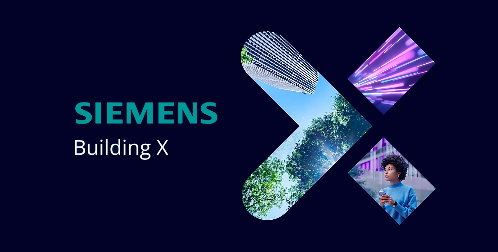
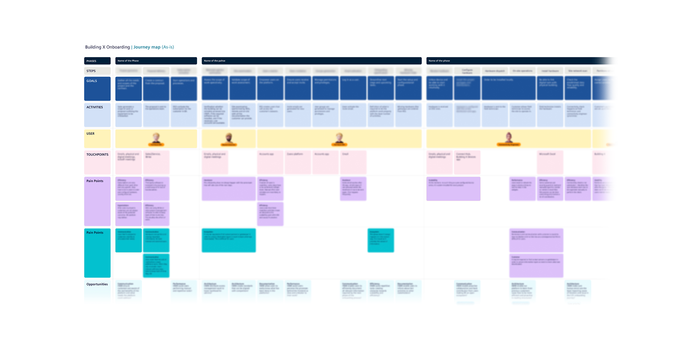
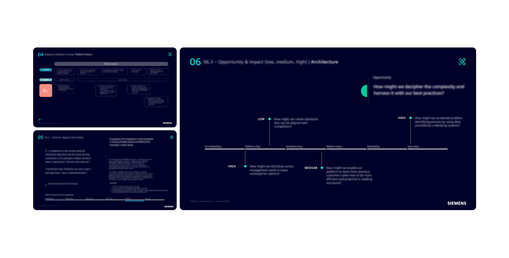

The first end-to-end map of how a building or campus gets onboarded onto Siemens' smart-building platform.La prima mappa end-to-end di come un edificio o un campus entra nella piattaforma smart building di Siemens.

Building X is Siemens' multi-product cloud platform for smart buildings and smart grids, sold mainly to B2B customers.Building X è la piattaforma cloud multi-prodotto di Siemens per smart building e smart grid, venduta soprattutto a clienti B2B.
I joined as senior UX researcher, to understand how a new site actually gets onto the platform.Sono entrato come senior UX researcher, per capire come un nuovo sito arriva davvero sulla piattaforma.
Nobody had mapped building or campus onboarding end to end before.Nessuno aveva mai mappato end-to-end l'onboarding di un edificio o di un campus.
40+ users across the USA, Africa and Europe — sales, procurement, installers, developers, engineers.Oltre 40 utenti tra USA, Africa ed Europa — vendite, acquisti, installatori, sviluppatori, ingegneri.
Depending on complexity, onboarding a site took from 6 months to 3 years.A seconda della complessità, l'onboarding di un sito durava da 6 mesi a 3 anni.
Stakeholders from several business divisions, each owning one piece of the flow.Stakeholder di diverse divisioni, ognuno responsabile di un pezzo del flusso.

For the first time, everyone involved in onboarding could see where their role fits in the whole flow. Pain points fell into 5 clusters of 6–12 issues each.Per la prima volta, chiunque partecipasse all'onboarding poteva vedere dove si colloca il proprio ruolo nel flusso. I pain point si sono raccolti in 5 cluster da 6–12 problemi ciascuno.

Never assume you've understood an interviewee — double-check, especially with engineers who have 25+ years on the job.Non dare per scontato di aver capito chi intervisti — verifica, soprattutto con ingegneri che hanno 25 anni di mestiere.
Thorough research takes time to set up, and saves more time than it costs.Una ricerca fatta bene richiede tempo per partire, ma ne fa risparmiare di più.